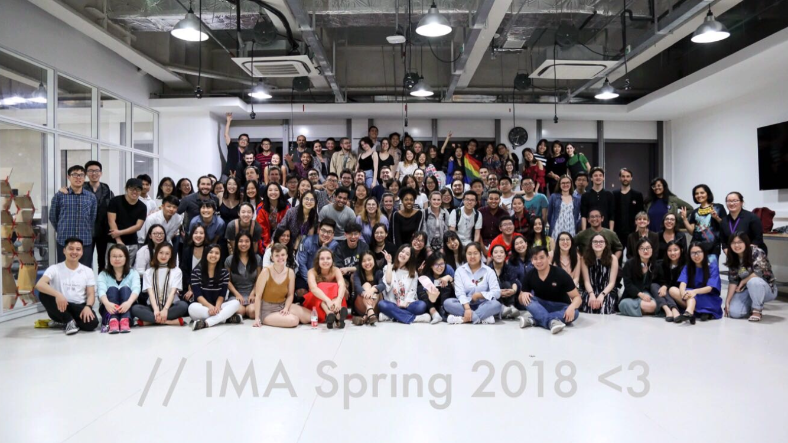
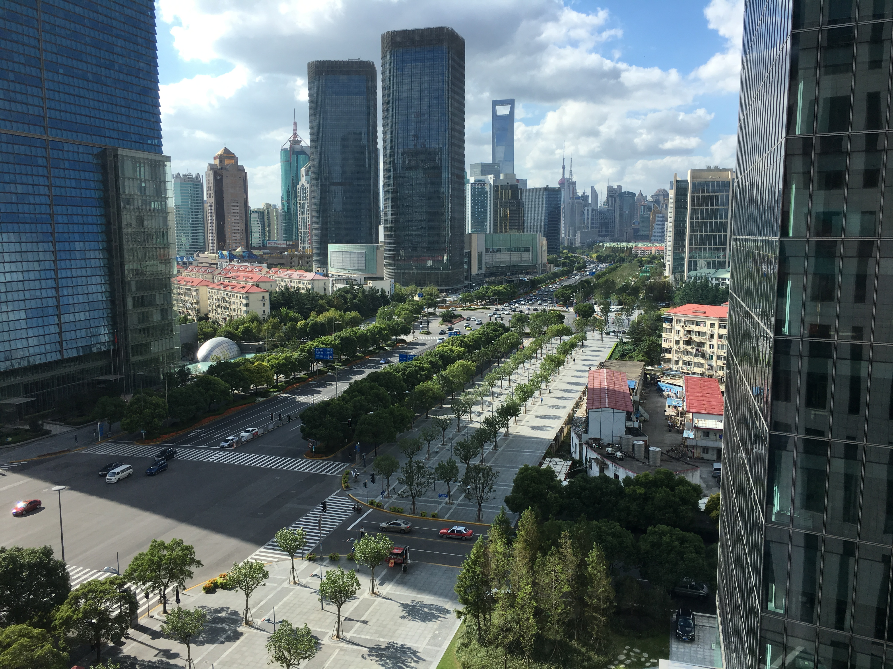
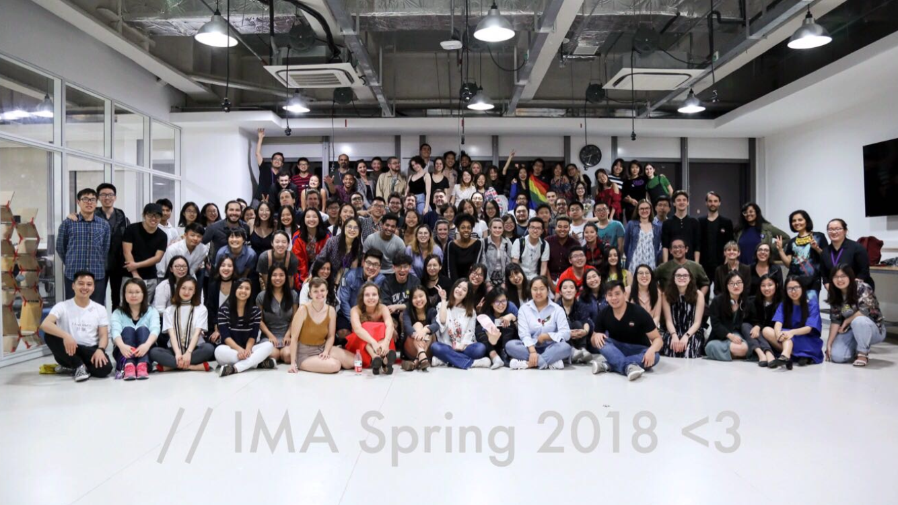
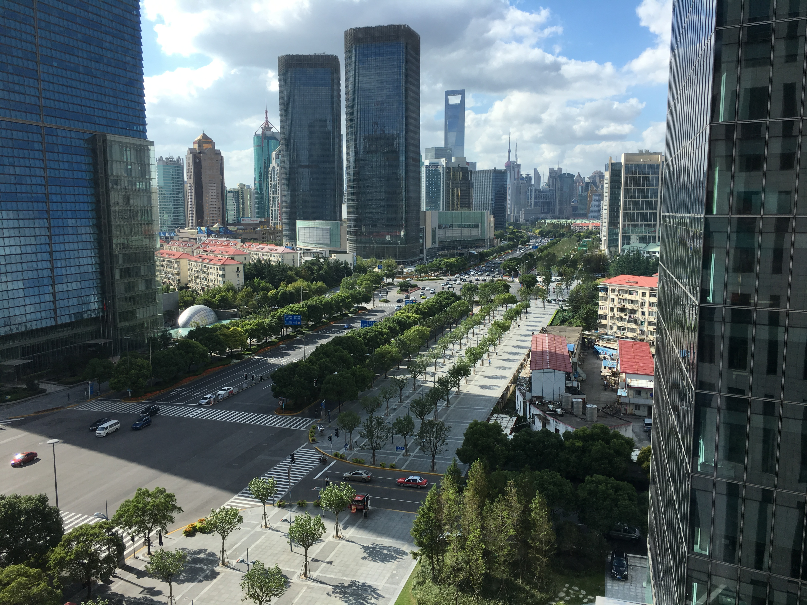

One of the things I love about NYUSH is the sense of community we have. We're an extremely new, small, and experimental school. Whether you're a Chinese or international student, coming here will bring you out of your comfort zone. These factors make us develop a sense of understanding among each other. Campus wise, we're in the financial area of Shanghai, so we're surrounded by people clad in suits. It's not very "exciting" in that sense, but it's very peaceful and inspirational to sit outside and be surrounded by major banks and such. Overall, because we're such a diverse bunch, you're constantly in an environment to learn from others and their culture, both inside and outside the classroom.